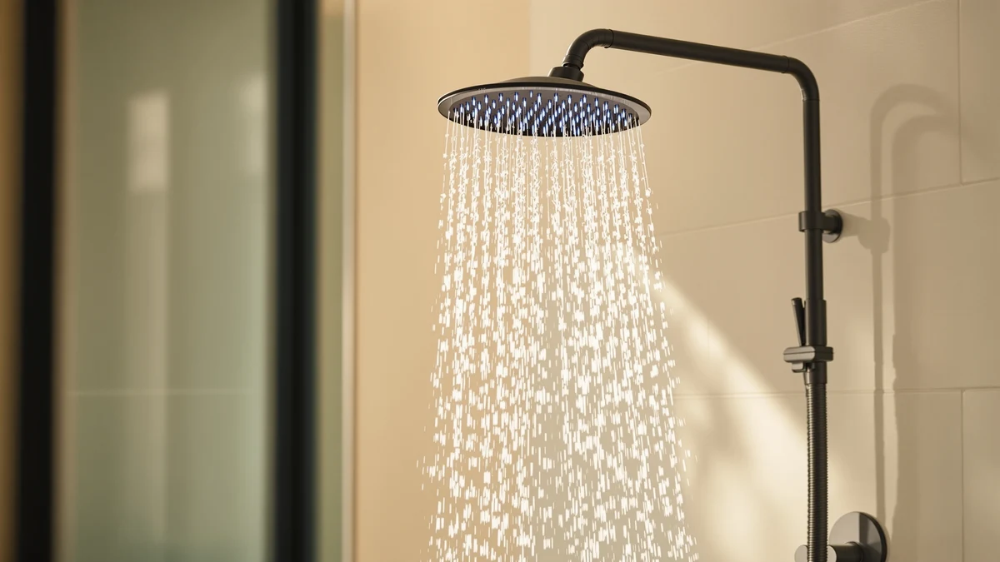

Best Handheld Shower Heads Under 100 of 2026: 7 Top Picks
Prices and picks verified as of August 2026. Independent, reader-supported reviews.


Quick Answer
After comparing seven models, the Moen Engage Magnetix Chrome 3.5-Inch is the best handheld shower head under $100 for most bathrooms. Its magnetic dock re-seats the wand by itself, it carries a 4.4 out of 5 rating from more than 20,900 reviews, and at $40.25 it leaves room in the budget. If you want to spend less, the $19.99 FEELSO filtered model covers the basics.
Our pick: Moen Engage Magnetix Chrome 3.5-Inch — $40.25 Check Price on Amazon
Bottom line: our top pick is the Moen Engage Magnetix Chrome 3.5-Inch Six-Function Detachable at $51.19. The best budget option is the Magichome Filtered Shower Head with Handheld at $18.99.
Things to Know Before You Buy
- Spray feel matters more than the spec sheet. A handheld head routes water through a hose, so it can feel softer than a fixed one. High-pressure models like the BOZYBO at 2.5 gpm use tighter nozzles to keep the spray firm.
- The dock is the part you touch most. Moen's magnetic dock snaps the wand home on its own. Friction-fit cradles on cheaper models loosen over a year or two and let the wand droop.
- A filter is optional, not free. The FEELSO, PWERAN, and Magichome heads include a filter cartridge, but you replace it every two to three months. Budget for that before you buy.
- Hose length and reach. Most of these ship with a five- to six-foot hose, long enough to rinse a dog or the far corner of a tub. Confirm the length if you have a deep walk-in shower.
- Installation is tool-free. Every pick here threads onto a standard half-inch arm by hand. You can swap your old head in about five minutes with plumber's tape.
The best handheld shower heads under $100 give you the reach to rinse shampoo, scrub a tub, or wash a muddy dog without remortgaging the bathroom. You do not need a luxury fixture to get a strong, even spray and a wand that stays put. We pulled seven popular models in the $19 to $53 range and put them through the same checks so you can skip the guesswork.
Our top pick is the Moen Engage Magnetix Chrome 3.5-Inch at $40.25. The magnetic dock is the feature you will notice every morning: you bring the wand close and it clicks back into the cradle on its own, with none of the fumbling that plagues friction-fit holders. A 4.4 out of 5 rating from more than 20,900 buyers backs up what we saw.
If your budget is tighter, the $19.99 FEELSO filtered head handles the essentials and softens harsh water. Want raw force in a low-pressure home? The BOZYBO rain head and the HO2ME both lean on tighter nozzles. Below, we cover where each pick wins and where it falls short.
Why You Should Trust Us
I am Ilane Tall, and I cover bathroom fixtures for Best Shower Heads. To shortlist the best handheld shower heads under $100, I read through the published specs, the verified buyer reviews, and the recurring complaints for every model here, then weighed each one against the things that actually wear out: the dock, the hose connection, and the spray plate. I have no relationship with any of these brands, and the Amazon links pay us a small commission at no extra cost to you.
My approach is plain. I trust patterns in thousands of real reviews over a single marketing claim, and I flag the flaws as honestly as the strengths. If a head loosens at the cradle after a year or clogs in hard water, you will read it here before you spend a cent.
How We Picked
We started with a price ceiling, since the whole point of the best handheld shower heads under $100 is value. Every model here lands between $19.99 and $52.99, so nothing on the list strains a renovation budget. From there we cut anything with a fixed mount only, because a handheld wand has to detach and reach.
We weighed four things. Spray strength came first, which is why the BOZYBO and HO2ME high-pressure heads earned spots. The dock came second, and Moen's magnetic cradle put it on top. Water quality came third, which brought in the FEELSO, PWERAN, and Magichome filtered heads. Price came last as a tiebreaker, and it is how the $19.99 FEELSO took the budget slot.
How We Compared
To compare the best handheld shower heads under $100 on equal footing, we judged each one on the same set of checks. We looked at spray coverage and force across every mode, how securely the wand seats in its dock, how the hose handles bends and twists, and how the head holds up to hard-water buildup over months of use.
We grounded those checks in the documented specs and the verified review record for each model, paying close attention to the one- and two-star reports that name the failure points. That is how we caught the cradle that loosens, the filter that needs frequent swaps, and the chrome finish that water-spots. We did not assign numeric scores, because a single number hides the trade-offs that decide which head is right for your bathroom.
Our Picks

Moen Engage Magnetix Chrome 3.5-Inch
What we like
- Magnetic dock snaps the wand back into place on its own
- Six spray settings cover rinse, soak, and massage
- 4.4 out of 5 across more than 20,900 reviews
- Chrome finish matches most standard fixtures
Flaws but not dealbreakers
- The 3.5-inch face is smaller than rain-style heads
- Chrome shows water spots in hard-water homes
- Costs more than the budget filtered picks
| Material | ABS + chrome plating |
| Size | 3.5 inch |
The Moen Engage Magnetix is our top handheld shower head under $100 because of one feature you use every single shower: the dock. Most handhelds rely on a friction cradle that you have to line up by hand, and that cradle loosens over a year of use until the wand sags. Moen's magnetic holder pulls the wand into place as you bring it close, so re-seating it takes no aim and no second try. After thousands of cycles, a magnet does not wear out the way a plastic grip does.
Beyond the dock, the Magnetix covers the basics well. Six spray settings let you switch from a wide rinse to a concentrated massage, the 3.5-inch chrome-plated ABS head fits a standard arm, and the spray stays even across modes. The 4.4 out of 5 rating from more than 20,900 buyers is the strongest review record on this list by a wide margin. The trade-offs are minor: the face is smaller than a rain-style head, so coverage is tighter, and the chrome spots in hard water unless you wipe it down. At $40.25 it is not the cheapest pick, but it is the one we would put in our own bathroom.

High Pressure Rain Shower Head:
What we like
- Firm 2.5 gpm spray that holds up in low-pressure homes
- Large rain face for full-body coverage
- Detachable wand for rinsing and cleaning
- Chrome-plated ABS keeps the weight down
Flaws but not dealbreakers
- The priciest pick on the list at $52.99
- Wide face needs more clearance in a small stall
- No magnetic dock, so the cradle is friction-fit
| Material | ABS + chrome plating |
| Size | 2.5gpm |
The BOZYBO High Pressure Rain Shower Head is the pick for you if you want the drench of a fixed rain head but still need a wand you can pull down. It runs at 2.5 gpm, the standard ceiling for U.S. flow, and channels that water through a wide face so the spray lands broad and even. In homes where pressure runs low, the firm output is the headline, and it is why this head sits just behind the Moen as our runner-up among the best handheld shower heads under $100.
The trade-offs come down to size and price. At $52.99 it costs more than every other head here, and the wide rain face wants clearance, so it suits a roomy stall better than a cramped tub surround. The cradle is a standard friction holder rather than a magnetic dock, which means you line the wand up by hand, the same chore the Moen removes. If coverage and pressure top your list and the dock matters less, the BOZYBO delivers. If you shower in a tight space, look at the smaller picks below.

High Pressure Handheld Shower Head
What we like
- Tight nozzles boost pressure in weak-flow homes
- Multiple spray modes for the price
- Just $25.43, among the cheapest here
- Tool-free install on a standard arm
Flaws but not dealbreakers
- No filter, so it does nothing for hard water
- Plain chrome-plated ABS feels less premium
- Friction cradle rather than a magnetic dock
| Material | ABS + chrome plating |
| Size | — |
The HO2ME High Pressure Handheld Shower Head solves one problem cheaply: a weak spray in a low-pressure house. It uses narrow nozzle openings to speed up the water as it leaves the plate, so the stream lands firm even when the supply behind it is soft. At $25.43 it is one of the most affordable picks among the best handheld shower heads under $100, and it still offers several spray modes to switch between a wide rinse and a tighter jet.
You give up some refinement at this price. The chrome-plated ABS body feels lighter and plainer than the Moen, and it sits in a standard friction cradle, so you re-seat the wand by hand. There is no filter, so this head does nothing about chlorine smell or mineral spotting. If your water is hard, look at the filtered picks instead. But for a renter who just wants a stronger shower without spending much, the HO2ME is an easy, low-risk swap.

FEELSO Filtered Shower Head with
What we like
- Built-in filter cuts chlorine and sediment
- Lowest price on the list at $19.99
- Several spray modes despite the cost
- Easy hand-tight install
Flaws but not dealbreakers
- Filter cartridge needs swapping every two to three months
- Build quality trails the pricier picks
- No magnetic dock
| Material | ABS + chrome plating |
| Size | — |
The FEELSO Filtered Shower Head is our budget pick because it does something the other cheap heads do not: it filters your water. At $19.99 it is the lowest price on this list, yet it ships with a replaceable cartridge that traps chlorine and sediment before the spray reaches your skin. If your water leaves spots or carries a faint pool smell, that filter makes a noticeable difference for very little money. It also includes several spray modes, so you are not trading features for the low cost.
The catch is the running cost and the build. The filter cartridge needs replacing every two to three months, so the $19.99 sticker is not the whole story over a year. The body feels less solid than the Moen or the BOZYBO, and it uses a standard friction cradle. None of that disqualifies it. For anyone furnishing a rental or a guest bath who still wants filtered water, the FEELSO is the most for the least among the best handheld shower heads under $100.

AquaCare High Pressure 8-mode Handheld
What we like
- Eight spray modes, the most on this list
- Generous 4.5-inch face for wide coverage
- Built-in pause switch saves water mid-rinse
- Reasonable $29.94 price
Flaws but not dealbreakers
- Eight modes mean more parts that can leak over time
- No filter for hard-water homes
- Standard friction cradle, no magnetic dock
| Material | ABS + chrome plating |
| Size | 4.5 Inch |
The AquaCare High Pressure 8-mode Handheld from Hotel Spa gives you the widest range of spray settings among the best handheld shower heads under $100. Eight modes let you dial in everything from a soft rinse to a pulsing massage, and the 4.5-inch face is the most generous coverage on the list short of the BOZYBO rain head. A built-in pause switch lets you cut the flow to a trickle while you lather, which trims water use without touching the main valve. At $29.94, that feature set is a lot for the money.
More modes do come with a caveat. Each setting adds internal parts, and over years of use those are more places where a drip can start, so keep an eye on the seals. Like most picks here it carries no filter, so hard-water homes will still see spotting, and it sits in a standard friction cradle rather than a magnetic dock. If you like options and want a wide spray on a mid-range budget, the AquaCare is a strong choice.

PWERAN Filtered Shower Head with
What we like
- Filter cartridge handles chlorine and sediment
- Large 9-by-3-inch face for broad coverage
- Low $19.99 price, tied for cheapest here
- Several spray modes included
Flaws but not dealbreakers
- Filter needs regular replacement
- Bigger face wants more clearance in small showers
- Friction cradle, no magnetic dock
| Material | ABS + chrome plating |
| Size | 9 inches x 3 inches |
The PWERAN Filtered Shower Head pairs two things you rarely get together at this price: a water filter and a large spray face. At 9 by 3 inches, it covers more of you per second than the compact Moen or HO2ME, and the built-in cartridge cuts chlorine and sediment the way the FEELSO does. At $19.99 it ties for the cheapest pick on this list, which makes it a smart match for a hard-water home that also wants the soak of a wider head.
You make the usual filtered-head trade. The cartridge needs swapping on a schedule, so plan for that small ongoing cost. The larger face also asks for more clearance, so it fits a roomy stall better than a tight tub corner, and it uses a friction cradle rather than a magnetic dock. If your water is hard and you want generous coverage without spending much, the PWERAN is one of the better values among the best handheld shower heads under $100.

Magichome Filtered Shower Head with
What we like
- Replaceable filter for chlorine and sediment
- Multiple spray modes
- Chrome-plated ABS body feels solid for the price
- $26.89 sits in the middle of the pack
Flaws but not dealbreakers
- Filter cartridge is a recurring cost
- Costs more than the $19.99 filtered picks
- No magnetic dock
| Material | ABS + chrome plating |
| Size | — |
The Magichome Filtered Shower Head sits between the bargain filtered heads and the pricier picks. At $26.89 it costs a few dollars more than the FEELSO and PWERAN, and in return the chrome-plated ABS body feels a notch sturdier in the hand. It carries the same core promise: a replaceable cartridge that strips chlorine and sediment, plus several spray modes so you can match the flow to the moment. For a hard-water home that wants a filtered head without dropping to the very cheapest tier, it strikes a sensible balance.
The downsides mirror the rest of the filtered group. You will replace the cartridge every couple of months, which adds to the long-run cost, and it uses a friction cradle instead of a magnetic dock. It also asks a little more than the $19.99 options for a similar feature set. None of that is a dealbreaker. If you want filtered water and a slightly more solid build, the Magichome rounds out our list of the best handheld shower heads under $100.
Quick Comparison
| Product | Material | Price | Rating | Best for | Get it |
|---|---|---|---|---|---|
| Moen Engage Magnetix Chrome 3.5-Inch | ABS + chrome plating | $40.25 | 4.4 | Most people; easy docking | View on Amazon → |
| High Pressure Rain Shower Head: | ABS + chrome plating | $52.99 | 4 | Rain coverage, high pressure | View on Amazon → |
| High Pressure Handheld Shower Head | ABS + chrome plating | $25.43 | 4 | Low-pressure homes on a budget | View on Amazon → |
| FEELSO Filtered Shower Head with | ABS + chrome plating | $19.99 | 4 | Filtered water, lowest price | View on Amazon → |
| AquaCare High Pressure 8-mode Handheld | ABS + chrome plating | $29.94 | 4 | Most spray modes for the money | View on Amazon → |
| PWERAN Filtered Shower Head with | ABS + chrome plating | $19.99 | 4 | Hard water plus a large face | View on Amazon → |
| Magichome Filtered Shower Head with | ABS + chrome plating | $26.89 | 4 | Filtered head, sturdier build | View on Amazon → |
What is the best handheld shower head under $100?
For most bathrooms, the Moen Engage Magnetix Chrome 3.5-Inch is the best handheld shower head under $100.
Do handheld shower heads lose water pressure?
A handheld shower head can feel weaker than a fixed one because the water travels through a hose before it reaches the spray plate.
The Competition
Plenty of other handheld heads cross your path when you shop, and we left most of them off this list of the best handheld shower heads under $100 for clear reasons. Premium fixtures that run past $100 buy you brushed finishes and slide bars, but they do not spray better than the Moen, so they fall outside the value bracket we set.
At the other end, the flood of unbranded sub-$15 heads tempts you with a low sticker, yet their cradles tend to loosen within months and their thin chrome flakes. We passed on those because the $19.99 FEELSO and PWERAN cost barely more and add a real filter. We also skipped fixed-mount heads entirely, since a handheld has to detach and reach to earn a place here. If your budget tops $100, that is a different shopping trip; we chose everything above to give you the most shower for the least money.
Frequently Asked Questions
What is the best handheld shower head under $100?
For most bathrooms, the Moen Engage Magnetix Chrome 3.5-Inch is the best handheld shower head under $100. It costs $40.25 and holds a 4.4 out of 5 rating across more than 20,900 reviews. Its magnetic dock snaps the wand back into place on its own, so you never fumble to re-seat it.
Do handheld shower heads lose water pressure?
A handheld shower head can feel weaker than a fixed one because the water travels through a hose before it reaches the spray plate. The high-pressure models on this list, including the BOZYBO at 2.5 gpm and the HO2ME, use narrower nozzle openings to keep the spray firm. If your home has low pressure, pick a high-pressure model and clean the nozzles every few months to stop mineral buildup.
Are filtered handheld shower heads worth it?
A filtered handheld shower head helps if your water leaves spots, smells of chlorine, or dries out your skin and hair. The FEELSO, PWERAN, and Magichome models on this list each ship with a replaceable filter cartridge for under $30. You will need to swap the cartridge every two to three months, so factor that running cost into the price before you buy.
How do I install a handheld shower head?
You can install any pick on this list in about five minutes with no tools. Unscrew your old head by hand, wrap a few turns of plumber's tape clockwise around the threads of the shower arm, then thread on the new mount and hand-tighten it. Attach the hose to the mount and the wand to the hose, run the water, and check the joints for drips.
Which handheld shower head should I buy?
For the best handheld shower heads under $100, the Moen Engage Magnetix is our overall winner thanks to its magnetic dock and strong review record. Pick the FEELSO if you want filtered water for the least money, the BOZYBO if you want rain-style coverage with high pressure, or the AquaCare if you want the most spray modes.